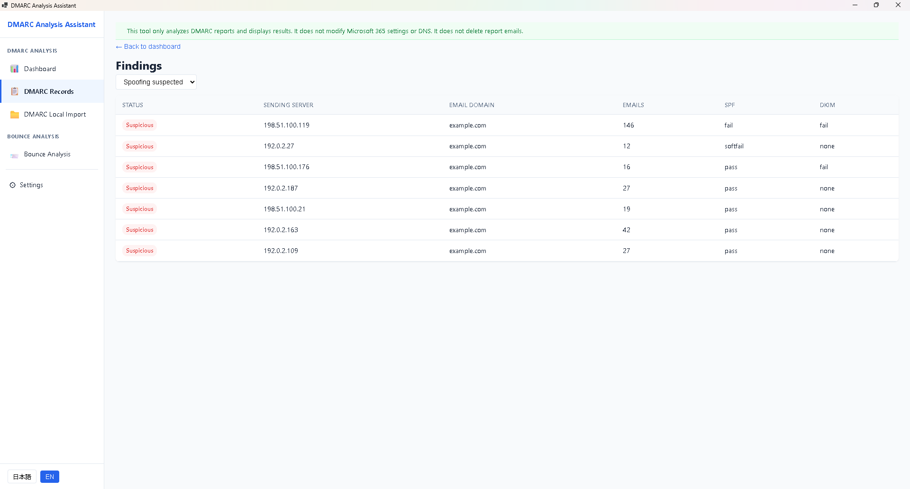
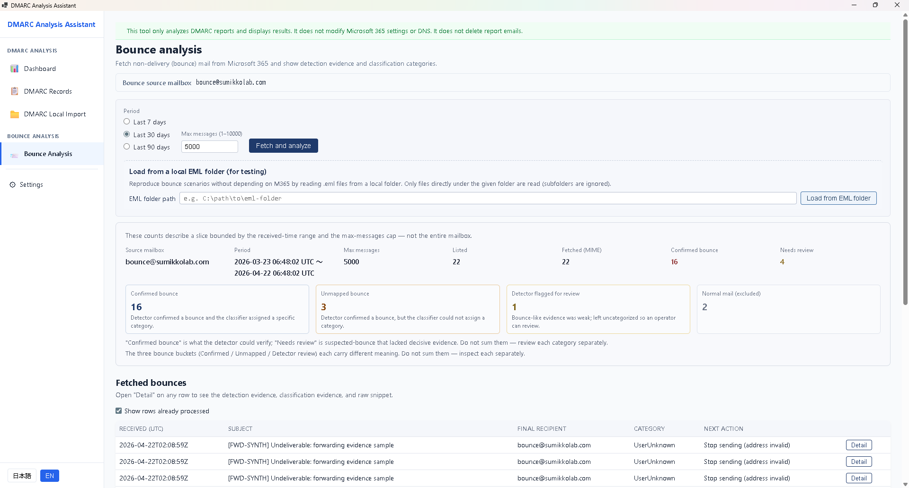
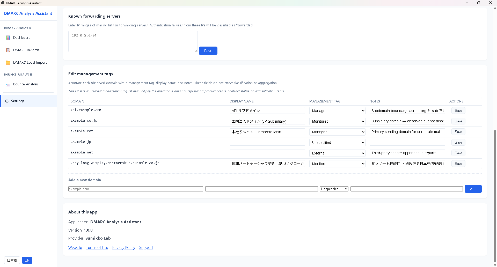

DMARC reports, reclassified so you see what to fix.
Analyze DMARC aggregate reports and bounce messages on your local device. Separate spoofing suspicions, configuration issues, and forwarded traffic. Nothing is sent to external servers or cloud analysis services.
Microsoft 365 からレポートメールを直接取り込む場合のみ、以下の委任権限が必要です。この機能を使わない場合は権限同意は不要です。
User.Read
サインイン・ユーザープロフィール（既定権限）
Mail.Read
受信トレイからの DMARC レポート / バウンスメール読み取り
メール本体の削除・移動・編集は行いません（読み取り専用）。
At a glance
What it is
A Windows desktop app that analyzes DMARC aggregate reports (RUA) and related bounce messages.
Who it is for
IT / operations staff at small to mid-sized organizations that own mail domains and need DMARC policy monitoring.
What it does
Imports ZIP / GZ / XML reports, correlates bounce messages, classifies into six categories (Spoofing suspected / Config issue / Forwarded / Legitimate / Bounce / Unknown), shows trends, exports CSV.
What it doesn't do
No external transmission. No cloud analysis or AI inference. Never sends, deletes, or edits mail. Never changes DNS.
Differentiators
Local-only, deterministic rule-based classification, optional Microsoft 365 integration with Mail.Read only, zero telemetry.
Can you actually read your DMARC reports?
DMARC aggregate reports (RUA) arrive as XML — just source IPs, SPF/DKIM results, and counts. At a glance it's impossible to tell which rows are spoofing, which are your own misconfigurations, and which are harmless forwarded traffic.
This tool analyzes report contents and related bounce messages locally and separates what needs action from what can be ignored.
How it works
1 Import reports
→
2 Parse XML / bounces
→
3 Classify (6 labels)
→
4 List & trend view
→
5 Export CSV
Six classification labels
Spoofing suspected
Both SPF and DKIM fail, originating from external IP. Highest priority.
Config issue
Legitimate sender failing auth. Check DNS or sending path.
Forwarded
Failure caused by forwarding. Usually no action needed.
Legitimate
Pass. Kept for record.
Bounce
Correlated with matched bounce messages.
Unknown
Insufficient information for automatic classification.
Classification is done by a rule-based engine. No AI inference or cloud analysis is used.
Key features
DMARC aggregate report analysis
Supports ZIP / GZ / XML formats. Extracts source IP, authentication results, and counts, then classifies into six categories.
Bounce message correlation
Import related bounce messages and correlate them with failing report entries. Helps distinguish forwarded traffic from real issues.
Trend aggregation
Visualize counts over time by domain, classification, and period. Useful for improvement tracking and management reporting.
CSV export
Export classification results to CSV for further analysis in Excel or BI tools, including SaaS sender attribution.
Screens
First step: choose to load report files, or pull them directly from Microsoft 365.

Filter by class and inspect records — source IP, domain, SPF, and DKIM in one view.

Bounce analysis: fifteen source models auto-sort messages into four buckets — confirmed bounce, needs review, and regular mail.

Multi-domain with management tags: Managed / Monitored / External keeps your DMARC posture organized.
Privacy: This tool runs locally on your device. Report contents, IP information, authentication results, and domain information are never sent to any external server. Microsoft 365 connections are made only when explicitly configured, and the permission scope is limited to Mail.Read. Authentication tokens are held in memory only and are never persisted to disk.
System requirements
OS
Windows 10 / 11
Runtime
.NET 8 Desktop Runtime
Required
Microsoft Edge WebView2 Runtime
Network
Microsoft 365 Graph API (mail import only, if configured)
Graph API permissions (optional feature)
The following delegated permissions are required only when importing reports directly from Microsoft 365. They are not needed if you don't use that feature.
User.Read
Sign-in and user profile (default permission)
Mail.Read
Read DMARC reports and bounce messages from the inbox
The tool does not delete, move, or edit mail (read-only).